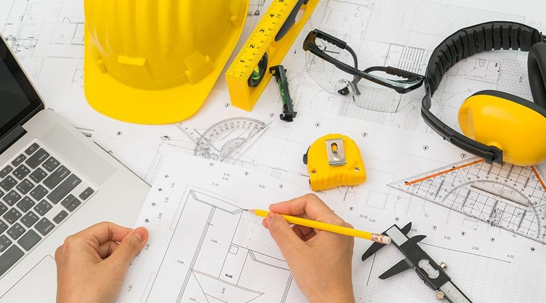
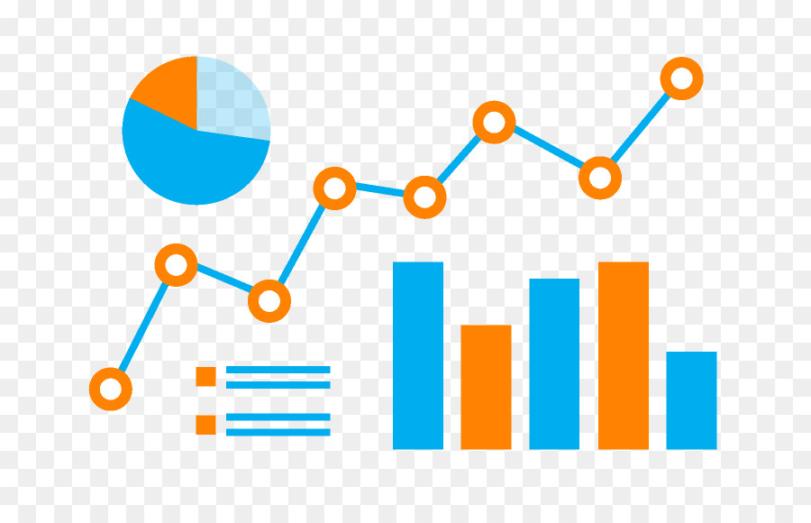

Mis Aspiraciones
|
¿Qué busco ser o lograr?
|
¿Que me motiva a hacerlo?
|
Como me veo 7u7 |
| Ingeriero de civil |
Porque me interesa lo que podre ser capaz de realizar luego de estudiar |
 |
| Una persona que cree oportunidades para los demás |
Porque quiero ver crecer a mi entorno. |
 |
| Un estudiante organizado |
Porque me ayudará a poder realizar mis metas |
|
| Una persona tipo T, conocimiento de todo, y especializado en uno |
Porque siento que es necesario saber desempeñarse en todo ambito |
 |
| Ingresar a una buena universidad |
Para prepararme de la mejor manera para la vida |
|
| Crear mi propia empresa de Tecnología |
Porque de esta manera puedo contribuir al crecimiento de mi entorno y emplear mis conocimientos |
|
| Manejo de Datos y procesamiento |
Para ser capaz de entender lo que busca la gente, y satisfacer aquellas espectativas |
 |
| Dominar 2 lenguajes de programación |
Porque me interesa la tecnología y en especial, crear soluciones |
 |
| Aprender, la quena, guitarra y zampoña |
Porque me gustaría ser capaz de difundir nuestro arte, al lugar donde vaya |
 |